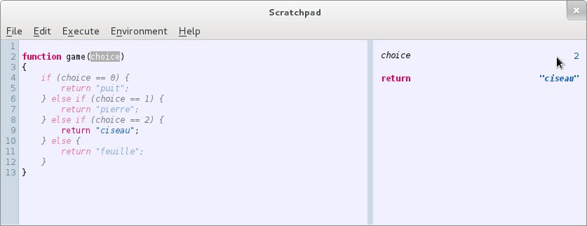
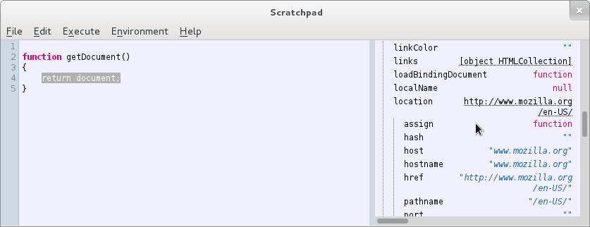
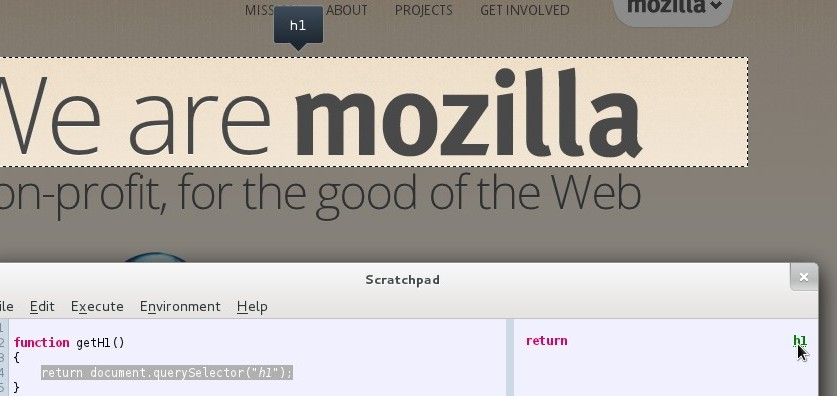

Code that does not run gets faded out.

Click an object to inspect its properties.

Click a DOM element to inspect it in the page inspector.

Firefox 11 or later. Firefox Nightly highly recommended!
(the add-on has more features on Nightly and is more tested with this version)
Download and install the latest available add-on from here.
Feedback? Follow @neonux
or drop by #devtools.
Pull requests also accepted ;)